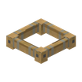
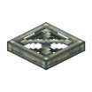

CREATE CODEX
机械动力图鉴
标签
源码
首页
/
标签
/ fan transparent
#fan transparent
create:fan_transparent
标签
成员
31
烈焰人燃烧室
烈焰人燃烧室（已点燃）

风帆框架
安山栏杆
黄铜栏杆
铜栏杆

伪装基底
铁栏杆
红树根
橡木栅栏
金合欢木栅栏
深色橡木栅栏
云杉木栅栏
白桦木栅栏
丛林木栅栏
绯红木栅栏
诡异木栅栏
红树木栅栏
竹栅栏
樱花木栅栏
下界砖栅栏
丛林树叶
橡树树叶
云杉树叶
深色橡树树叶
金合欢树叶
白桦树叶
杜鹃树叶
盛开的杜鹃树叶
红树树叶
樱花树叶
用到它的 Create 配方
本站收录的 Create 配方里没有用到它。